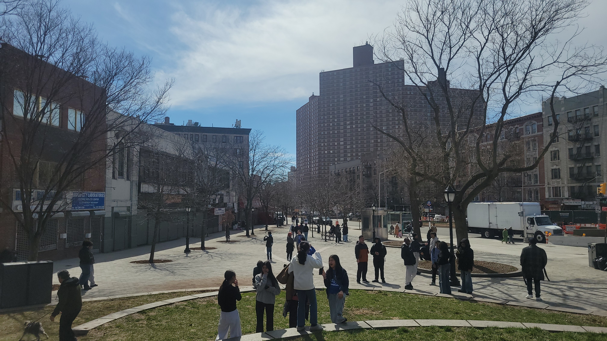
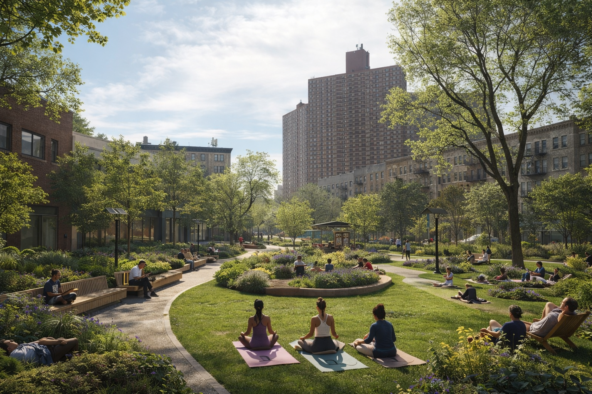
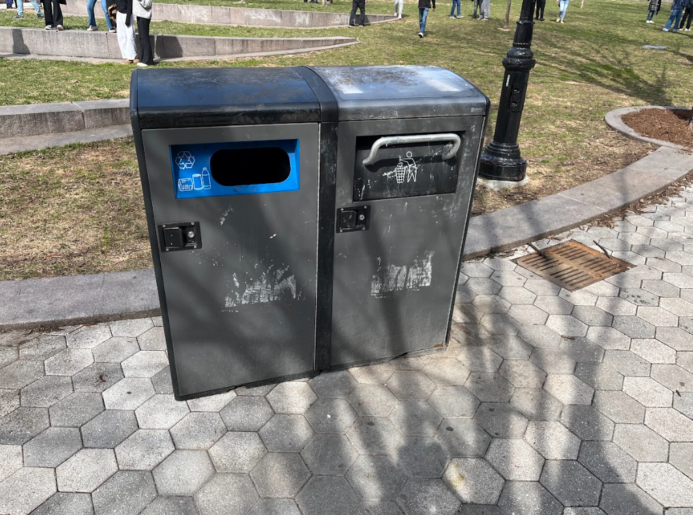
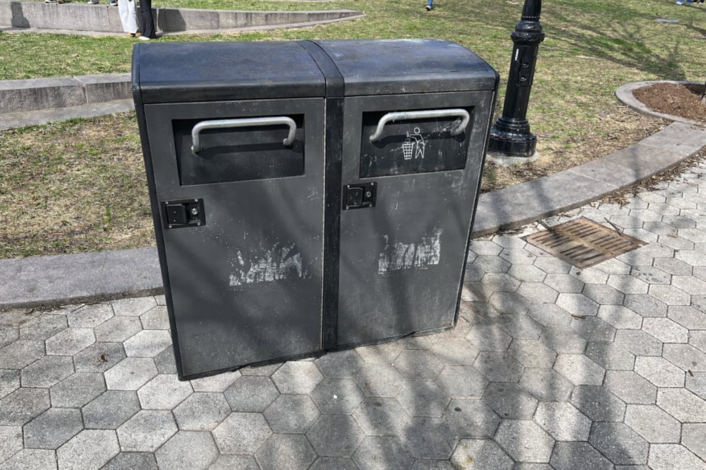

Final Proposal
The final design creates a green wellness plaza with shaded seating, improved planting, and features that support comfort and public health.

Transforming Harlem Plaza into a greener, healthier space
See Transformation
No shade, hard concrete, uncomfortable environment.

Added trees, shade, and seating for comfort.

Broken cover for bin.

Cover added to the bin.
The final design creates a green wellness plaza with shaded seating, improved planting, and features that support comfort and public health.
AI helped generate visual ideas and explore multiple design directions. Human decisions refined the final concept to ensure realism and usability.